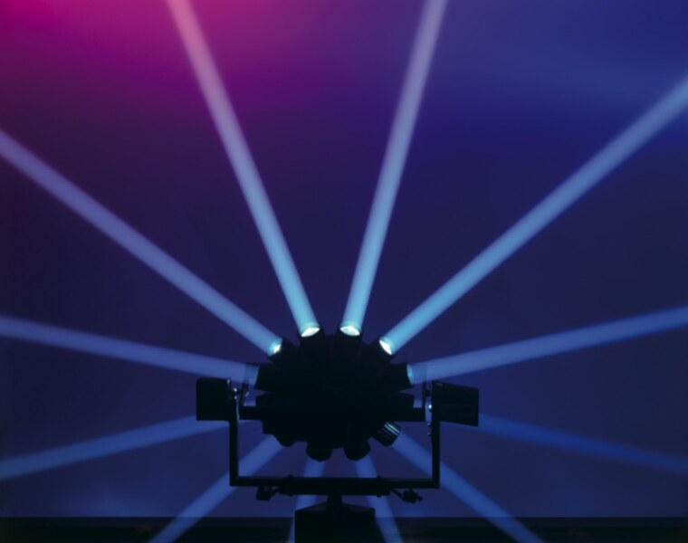
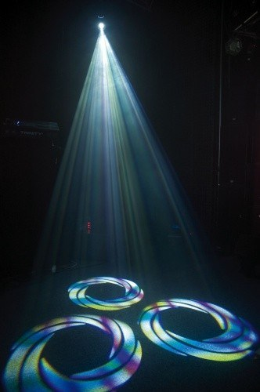

CLAY PAKY ASTRODISCO
De bol met tientallen bundels die tegelijk door de zaal draaien. In de jaren negentig hing hij boven elke dansvloer die ertoe deed. De onze zijn opnieuw opgebouwd, met een nieuwe lichtbron die meer licht geeft dan het origineel.
Sommige lichteffecten zijn nooit overtroffen, alleen vergeten. Wij halen de klassiekers uit de discotheken van de jaren negentig terug, reviseren ze en geven ze een moderne lichtbron. Het resultaat is een effect dat niemand meer kent, met de kracht van nu.


De bol met tientallen bundels die tegelijk door de zaal draaien. In de jaren negentig hing hij boven elke dansvloer die ertoe deed. De onze zijn opnieuw opgebouwd, met een nieuwe lichtbron die meer licht geeft dan het origineel.
Scanners: een spiegel die een bundel razendsnel door de ruimte stuurt, met gobo's en kleuren die het beeld steeds veranderen. Sneller dan een moving head en met een eigen, grafisch karakter. Op een muur of een vloer tekenen ze patronen die je in een moderne show niet meer ziet.
Als accent, niet als hele show. Eén Astrodisco boven de dansvloer naast een moderne opstelling geeft precies het moment dat mensen hun telefoon pakken. Bij een disco- of houseavond, een jubileum of een merk dat met nostalgie speelt, past het altijd.